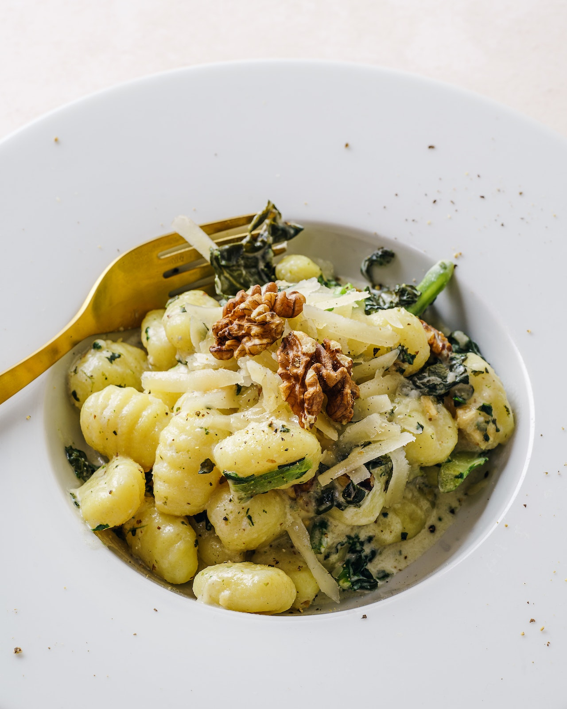

Ñoquis

Rinde para dos platos.
Tiempo de preparación: 20 minutos.
Tiempo de cocción: 10 minutos (Hasta que los ñoquis floten del agua)
Ingredientes
1/2 Papas
1 Huevo
200 gr. de almidón de maís o maicena
Sal y Pimienta al gusto
Paso a Paso
Herví las papas con la cáscara y sal gruesa. Previamente lavalas y cepillalas muy bien.
Hacé un puré con las papas calientes. Agregá sal, aceite, manteca y queso blanco.
Mezclá e incorporá el huevo. Mantené la preparación calentita. Agregá la mitad de la Maizena previamente
tamizada.
Uní todos los ingredientes y dejá reposar para que absorba la mezcla y empiece a bajar la temperatura. Al
empezar a enfriar va a ir tomando un poco más de consistencia.
Agregá el resto de la Maizena y continuá amansando hasta formar una masa lisa y suave.
Cortá en porciones con el cuchillo enharinado, formá rollitos y cortá los ñoquis. Ponelos en un recipiente
con un chorrito de aceite.
Cociná en abundante agua hirviendo con sal y cuando suben a la superficie dejá hervir un momentito, colalos
y pasalos a una fuente con manteca cortada en trocitos.
Luego servilos con la salsa filleto, crema, queso o lo que más te guste.